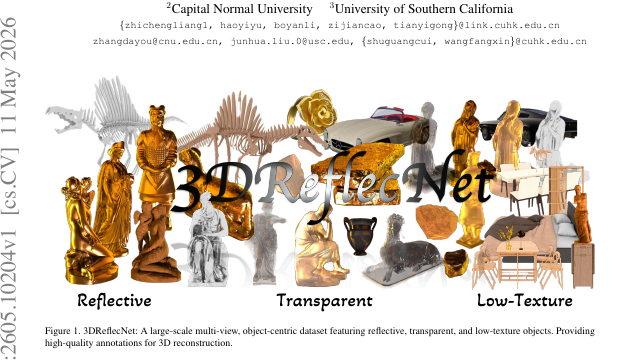
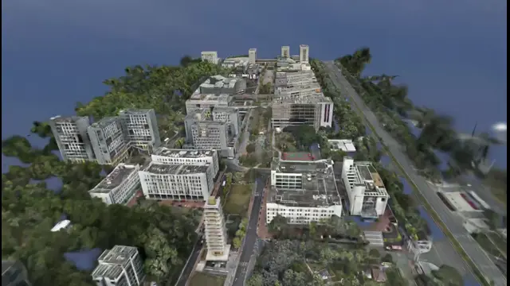
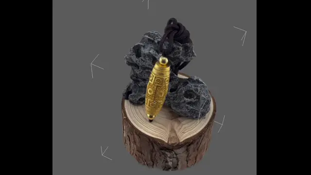
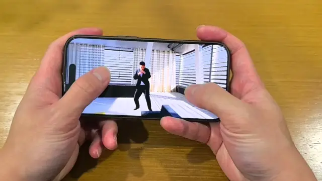
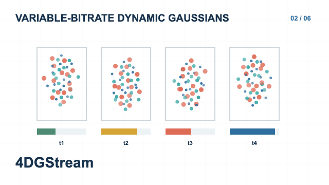
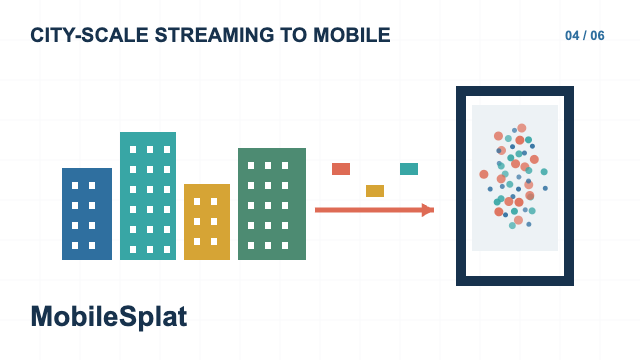
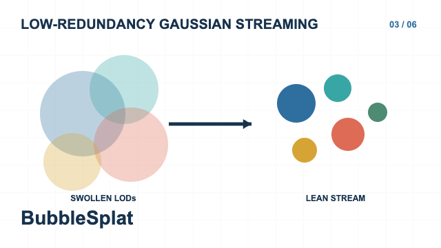
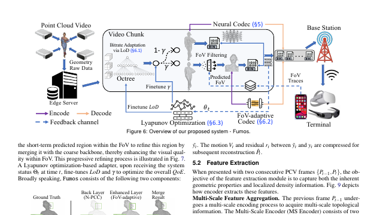
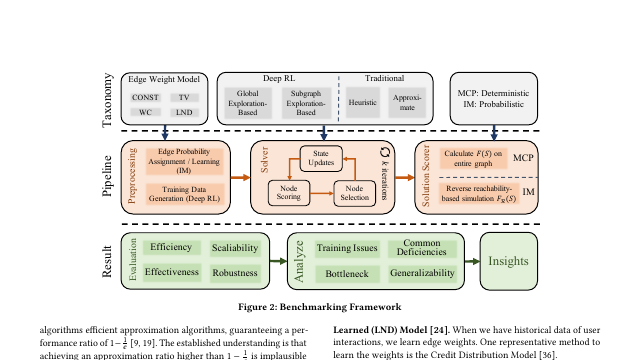

01 / RECONSTRUCTIONCVPR 2026 · ORAL

3DReflecNet
Reconstructing reflective, transparent, and low-texture objects with a large-scale benchmark.
BEST PAPER FINALISTPaper ↗
RESEARCH PORTFOLIO / 2026
I reconstruct, stream, and render 3D and 4D scenes—from challenging objects to city-scale environments.
I am Zhicheng Liang, a Ph.D. candidate at The Chinese University of Hong Kong, Shenzhen, advised by Prof. Fangxin Wang. My work connects spatial intelligence with practical multimedia systems.

01 / RECONSTRUCT THE WORLD 22.6° N / 114.1° E
OBJECTS / DETAIL
DEVICES / MOTIONResearch across 3D reconstruction, Gaussian splatting, and spatial streaming.

Reconstructing reflective, transparent, and low-texture objects with a large-scale benchmark.


Real-time streaming and rendering of city-scale 3D scenes on mobile platforms.


Neural compression and progressive refinement for continuous point cloud video.

Benchmarking reinforcement learning for maximum coverage problems over graphs.
Select a project, then press play to load its video.
High-definition reconstruction of challenging reflective objects.
My research sits between computer vision and multimedia systems. I work on representations that make 3D scenes easier to reconstruct, compress, stream, and experience.
zhichengliang1@link.cuhk.edu.cn ↗3D foundation model pre-training and post-training.
Computer Information in Engineering.
Data Science, with distinction.
Internet of Things.